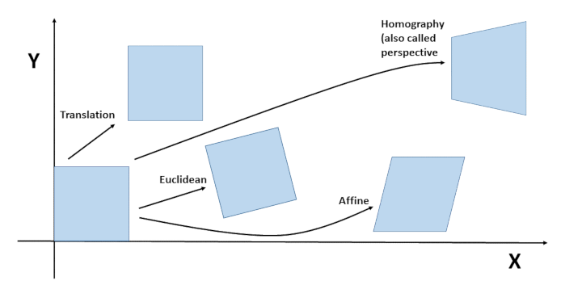

Aligning your images
Why aligining them?
Even on a tripod you might have "micro" shake which you will see when pixel-peeping.
If you do stacking of handheld burst-mode images to reduce noise, in case you are without a tripod and can't use a slow shutter speed in
combination with a low ISO on a tripod, you better get rid of the first few and last few images
as they contain the most shake due to camera button press/release.
Alignment methods
OpenCV offers one alignment option and multiple keypoint detector options. In PyImageFuser we can use a number of those methods being:
- AlignMTB: This algorithm converts images to median threshold bitmaps (1 for pixels brighter than median luminance and 0 otherwise) and than aligns the resulting bitmaps using bit operations. It is invariant to exposure, so exposure values and camera response are not necessary.
- ECC: Enhanced Correlation Coefficient (ECC) Maximization
- ORB: Oriented FAST and Rotated BRIEF.
- SIFT: Scale Invariant Feature Transform (Note: Since 2020 SIFT is patent-free.
Note that all these methods are FOSS. SIFT and SURF are patented.
AlignMTB is an aligning method using Median Threshold Bitmaps (MTB). This means that the images are first converted to these bitmaps, then having 1 for pixels higher than
median luminance and 0 for pixels lower than median luminance.
ECC is not feature based. It is a motion model alignment algorithm for alignment.
For more info about ECC see this Image Alignment (ECC) in OpenCV
ORB is a feature based keypoint detector based on FAST, with rotation enhancements (rotated BRIEF).
For more info about ORB see this OpenCV tutorial artcle
or this Feature Based Image Alignment using OpenCV.
SIFT extracts keypoints and computes its descriptors
Pros/Cons of the methods
- AlignMTB: (Very) fast. Used for aligning images for Exposure Fusion (only), but does not always properly align.
- ECC: Very slow but accurate. Can be used for stacking (noise reduction) and exposure fusion.
- ORB: (Very) fast and robust. Used for aligning in (focus) stacks and exposure fusion. Not so good in exposure fusion where you have huge differences
in exposure (up to +5/+6 or -5/-6), or on low res images (but who does use these anyway?)
- SIFT: Very slow but a very good keypoint descriptor.
ECC geometric image transformation models:
First the simple explanation:
See below the graphical representation of the geometric transformation models for images.

Now let's assume our image is a piece of paper lying on a table.
- In "Translation" we simply slide the piece of paper a little (2-Dimensional).
- In "Euclidean" we also rotate the piece of paper a little (2-Dimensional).
- Now assume our piece of paper is a little elastic.
- In "Euclidean" we shift and rotate it a bit, and we also stretch it a bit on the opposite corners (2-Dimensional).
- In "Homography" (also called perspective) we shift, rotate, stretch and lift it slightly and uneven of the table (3-Dimensional).
Now the "scientific" explanation:
- Translation ( MOTION_TRANSLATION ) : The first image can be shifted ( translated ) by (x , y) to obtain the second image. There are only two parameters x and y that need to be estimated.
- Euclidean ( MOTION_EUCLIDEAN ) : The first image is a rotated and shifted version of the second image. There are three parameters — x, y and angle . In the Euclidean transformation of a square, the size does not change, parallel lines remain parallel, and right angles remain unchanged after transformation.
- Affine ( MOTION_AFFINE ) : An affine transform is a combination of rotation, translation ( shift ), scale, and shear. This transform has six parameters. When a square undergoes an Affine transformation, parallel lines remain parallel, but lines meeting at right angles no longer remain orthogonal.
- Homography ( MOTION_HOMOGRAPHY ) : All the transforms described above are 2D transforms. They do not account for 3D effects. A homography transform on the other hand can account for some 3D effects ( but not all ). This transform has 8 parameters. A square when transformed using a Homography can change to any quadrilateral.
See for OpenCV geometric transformation in images this short article.